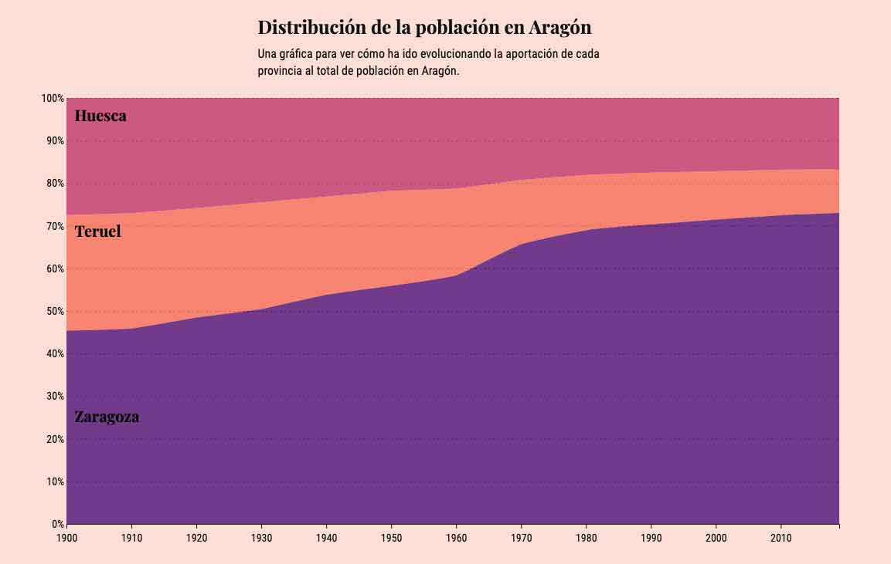
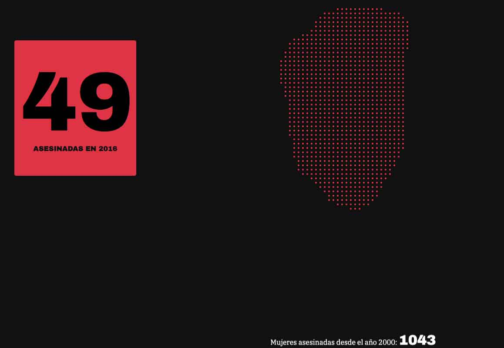
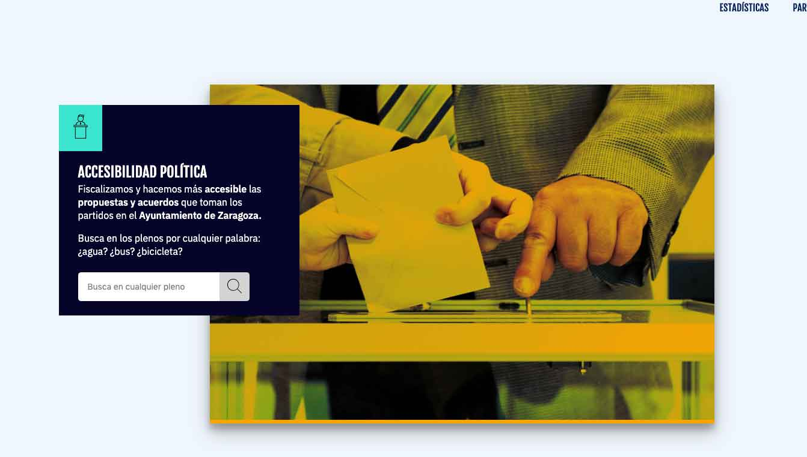
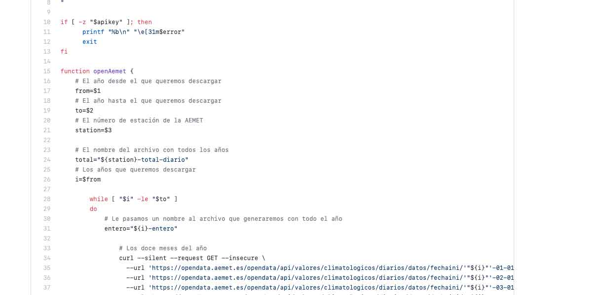
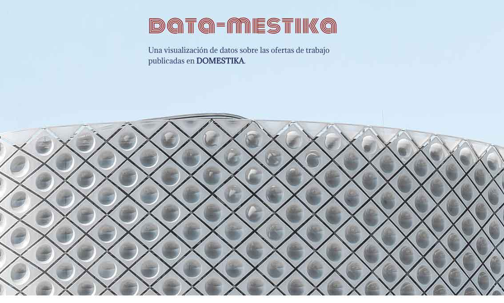
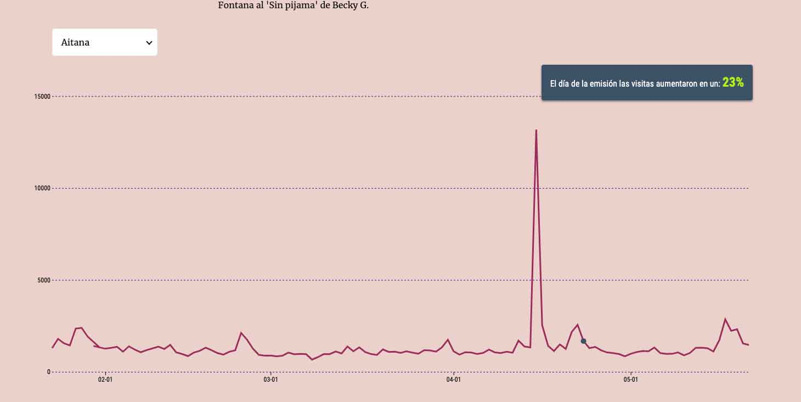
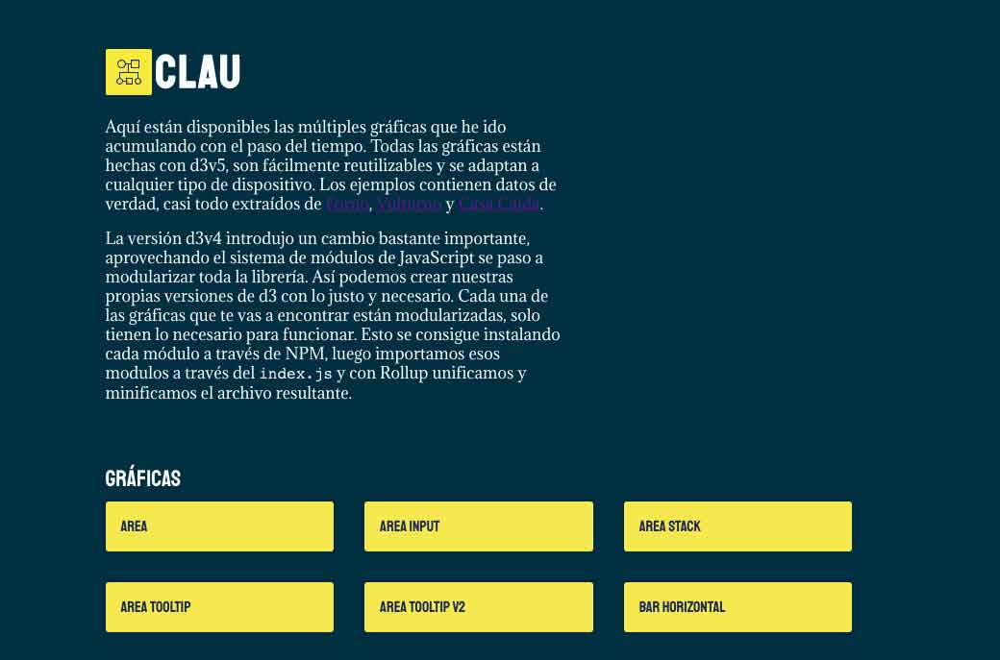
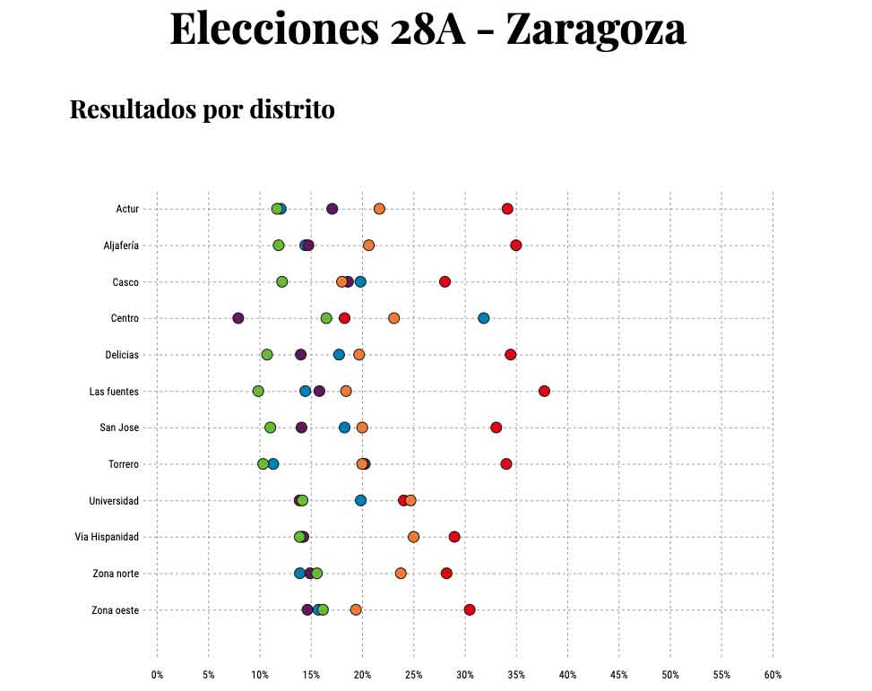

VULTURNO
2016 - 2019Visualizando como el cambio climático está aumentando las temperaturas en 47 estaciones de la AEMET.
LA CASA CAÍDA
2019La despoblación de los municipios de Aragón a lo largo del último siglo.
DEMASIADAS
2019Una visualización de datos sobre la violencia de género. Desde el año 2000 más de 1000 mujeres han sido asesinadas.
BISLAI
2016 - 2019Fiscalización de las mociones que presentan los grupos politicos en el Ayuntamiento de Zaragoza.
LURTE
2018Un scrapper para descargar los datos de cualquier estación meteorologica de la AEMET.
DATA-MESTIKA
2017 - 2019Como se reparten las ofertas de trabajo publicadas en Domestika a lo largo de 10 años.
WIKI CACHITOS
2019¿Cuánto aumentan las visitas a la Wikipedia cuando un artista sale en Cachitos?
CLAU
2018Una colección de gráficas responsive hechas con d3.
ELECCIONES 28A - 2019
2019Una visualización de datos con los votos a cada una de las secciones censales de la ciudad de Zaragoza.
PQNVLN
2019Una visualización de datos con todos los datos obtenidos por Poletika en candi-DATOS para las elecciones del 28A de 2019.
SCALABLE
A lo largo de 15 capítulos y más de 120 páginas vamos a ver todo lo que podemos hacer con SVG.